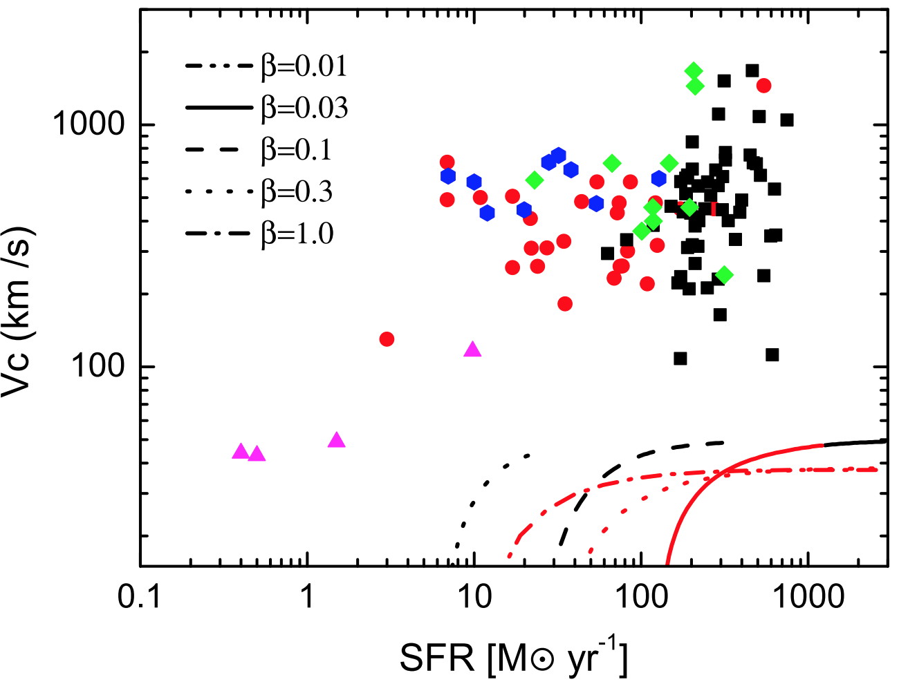
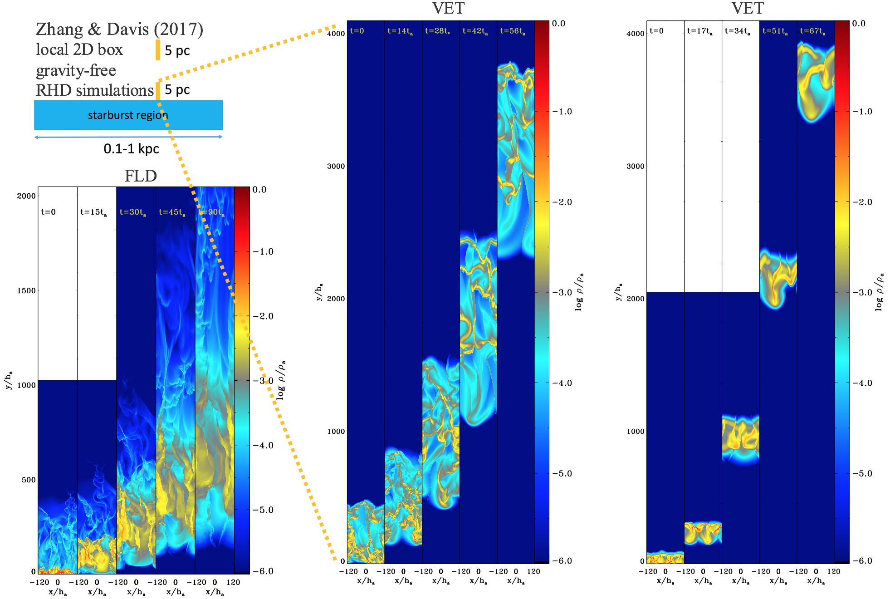
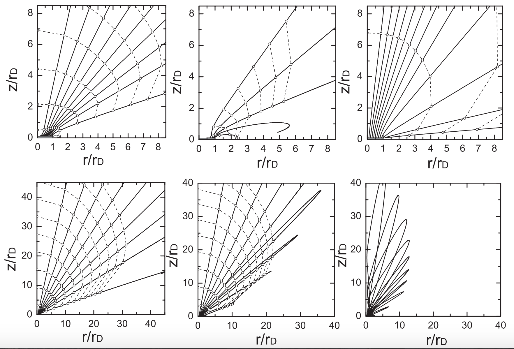

Projects
◆ 3D Point Cloud Image Segmentation, Classification and Identification
Consulting project for the Insight Data Science Program, Seattle
Energy industry spends tens of billions of dollars on asset inspection and maintenance every year. What they are doing now is to use robotic systems such as drones to capture 2D pictures of their assets, and integrate them into 3D images using photogrammetry algorithms for inspection (see this interesting video for more details).
In order to better understand the state and features of various asset components such as pipes, valves, tanks and so on, it is very important to do 3D image segmentation and classification. A big issue now is that the process involved in classifying the image down to components is mostly manual (by hand), which is really time-consuming. In order to perform real-time inspection using 3D images, a technique of automatically recognize objects rather than manual work is necessary.
My project is to create a tool to automatically segment, cluster and classify objects in 3D images using unsupervised machine learning tools such as DBSCAN, GaussianMixture, and computer vision tool such as openCV. My tool may not only benefit energy industry companies and asset owners, but potentially also all 3D computer vision-related industry in the future.
The raw data is from a startup company Hybird Tech, which has taken large volumes of photos by drones and generate 3D point cloud images of water treatment plants and pipes. Each 3D image is 2-10 GB with 50-100 million point datasets, and each point includes (x,y,z) coordinates, RGB information and other dimensions. Point cloud data can be opened by Global Mapper, or CloudCompare . I took snapshot of two images.
This gives you a basic idea what the 3D point cloud image looks like:
I used unsupervised machine learning clustering DBSCAN and Gaussian Mixture model to segment objects in point cloud images, and use openCV and ORB to identify objects. Using my tool, I help energy industry companies to better use their 3D images for inspection. In particular, currently 3D asset component segmentation and labeling are pretty time-consuming. For example, for a 3D image of water treatment factory with 50 million points, it takes a person 3-4 hours to label pipes in the image. My tool can provide an automatic way to select pipes and tanks in several minutes. The details of the project can be found here: https://dongzhang84.github.io/classify3d
Or this is a Demo of my tool (3D pipe finder)
◆ Content-based recommender system using Natural Language processing techniques
This is under construction. More details will come soon! Some details can be found here: https://github.com/dongzhang84/BookReco
And this is the website for the recommender system: http://booksrecommend.ml/
◆ Numerical Simulations of Supernova Remnants in Turbulent Molecular Clouds
Dong Zhang, and Roger Chevalier, submitted to MNRAS (2018).
Molecular Clouds are highly turbulent. An important class of core-collapse The numerical simulations of the interaction between a single supernova remnants (SNRs) and the turbulent molecular clouds not only provides the required sub-grid models for galactic-scale simulations of galaxy formation, but also can be directly compared to the observed SNRs, in particular, the mixed morphology SNRs. We perform a series of three-dimensional hydrodynamic simulations to model the interaction between an individual supernova remnant (SNR) and a turbulent MC medium, in order to investigate possible observational evidence for the turbulent structure of MCs. We find that the properties of SNRs are mainly controlled by the mean density of the surrounding medium, while a SNR in a more turbulent medium with higher supersonic turbulent Mach number shows lower interior temperature, lower radial momentum, and dimmer X-ray emission compared to one in a less turbulent medium with the same mean density. We compare our simulations to observed SNRs, in particular, to W44, W28 and IC 443. We estimate that the mean density of the ambient medium is ∼10 cm^{−3} for W44 and W28. The ambient medium of W44 and W28 has significantly lower average density than that of the host giant MC. This result may be related to the stellar feedback from the SNRs' progenitors.▊ Movie one (lower left): Turbulence evolution with the initial turbulent Mach number being one. The average density is set to be one, and the box size is in an arbitrary unit .
▊ Movie two (lower right): 2D Density slice of a 3D SNR in a turbulent medium with the average density being 100 cm^{-3}.
◆ Constraint on Hot Galactic Wind Model
Dong Zhang, Todd Thompson, Norman Murray and Eliot Quataert, ApJ (2014).
 Supernova feedback is an essential ingredient in galaxy formation and evolution. SNe are believed to play a crucial role in depositing energy and momentum, driving turbulence in the interstellar medium, and creating hot galactic winds. The widely used analytic hot wind model by Chevalier & Clegg (1985)
is a good approximation for describing hot galactic winds driven by SNe. However, the mass-loading rate β (the ratio of total mass loss rate and the total star formation rate SFR) is difficult to be constrained directly by observation. Before my work, most studies focused on the starburst M82 or several nearby galaxies. I used the observed correlation between SFR and X_ray emission across a wide range of star-forming galaxies to put the first stringent constraint on β that β ≾ 0.1-1 for SFR ≾ 1-10 M⊙/yr. This limit of β, which is consistent with later numerical simulations, is significantly lower than the total mass-loading rate of cool/cold outflowing gas observed, and that required by cosmological simulations. We showed that most mass of the multiphase galactic winds is in the warm (T ~ 10^4 K), cool (T ~ 10^3 K), or cold (T ≾ 10^2 K) phases.
Supernova feedback is an essential ingredient in galaxy formation and evolution. SNe are believed to play a crucial role in depositing energy and momentum, driving turbulence in the interstellar medium, and creating hot galactic winds. The widely used analytic hot wind model by Chevalier & Clegg (1985)
is a good approximation for describing hot galactic winds driven by SNe. However, the mass-loading rate β (the ratio of total mass loss rate and the total star formation rate SFR) is difficult to be constrained directly by observation. Before my work, most studies focused on the starburst M82 or several nearby galaxies. I used the observed correlation between SFR and X_ray emission across a wide range of star-forming galaxies to put the first stringent constraint on β that β ≾ 0.1-1 for SFR ≾ 1-10 M⊙/yr. This limit of β, which is consistent with later numerical simulations, is significantly lower than the total mass-loading rate of cool/cold outflowing gas observed, and that required by cosmological simulations. We showed that most mass of the multiphase galactic winds is in the warm (T ~ 10^4 K), cool (T ~ 10^3 K), or cold (T ≾ 10^2 K) phases.
◆ Entrainment in Trouble -- Clouds Destruction in How Galactic Winds
Dong Zhang, Todd Thompson, Eliot Quataert and Norman Murray, MNRAS (2017).
Galactic winds are observed to be multiphase. What is the origin of the outflowing clouds of molecular, neutral atomic and ionized gas observed in star-forming galaxies? Can clouds be accelerated by the ram pressure of hot winds to match observations? For fiducial assumptions about the time-scale for cloud shredding from high-resolution simulations, we show that cool clouds with temperature from temperature ~ 10^2-10^4 K seen in emission and absorption in galactic winds cannot be accelerated to observed velocities by the ram pressure of hot winds. Taking into account both the radial structure of hot flows and gravity, we found that this conclusion holds over a wide range of galaxies and cloud properties. SN-driven hot winds and SN feedback are not likely to be the primary mechanism to drive multiphase clouds, unless magnetic fields in the clouds are sufficiently important to prolong the lifetime of the clouds.
The Figure above shows the relation between the calculated cloud maximum velocities and the SFRs for mass-loading rates β = 0.01, 0.03, 0.1, 0.3 and 1. Black lines are for adiabatic winds, and red lines are formally in the radiative region. The galactic outflow data are from observations. The max velocities of clouds gained by ram pressure of hot winds are far below the observed velocities.
◆ Irradiated Dusty Clouds in Rapidy Star-Forming Galaxies
Dong Zhang, Shane Davis, Yan-Fei Jiang and James Stone, ApJ (2018) .
Radiation pressure feedback may be important to launching dusty winds in rapidly star-forming galaxies (RSFGs), and disrupting giant molecular clouds. The dusty gas absorbs the direct UV radiation from starlight, and re-radiates infrared photons, which can give multiple "kicks" to gas by absorption or scattering if the gas is optically thick to infrared. Beyond supernova feedback (see my older projects), a possible explanation of the observed high-velocity cool and cold clouds in RSFGs. We performed 2D and 3D radiation hydrodynamic simulations to study cold clouds in an infrared radiation flux, which can be applied to the environment of RSFGs. We utilize the reduced speed of light approximation to solve the time-dependent grey radiative transfer equation, using the state-of-the-art ATHENA++ radiation code. We found that radiation pressure is capable of accelerating the clouds to hundreds of km/s while remaining dense and cold, consistent with observations. We compared these results to simulations where acceleration is provided by entrainment in a hot galactic wind launched by supernova feedback, and found the the survival time of clouds accelerated by radiation is significantly longer than that of a cloud entrained in a hot flow.▊ Movie one (left): Density profile of a cloud with temperature 100 K and initially embedded in a hot medium with 10^6 K, and the cloud initial infrared optical depth = 0.01. The lengthscale unit is 0.1 pc. The simulation adopts a cloud-following scheme. The cloud eventually forms a pancake structure elongated perpendicular to the direction of motion.
▊ Movie two (right): Similar to the left movie, but for the cloud initial infrared optical depth = 1. The cloud eventually forms a filamentary shape elongated parallel to the direction of motion.
▊ Movie three (left): Density profile of a cloud with temperature 100 K and initially embedded in a hot medium with 10^6 K, and the cloud initial infrared optical depth = 0.01. The lengthscale unit is the pressure height scale (small scale).
▊ Movie four (right): Similar to the left (small scale) movie, but for the cloud initial infrared optical depth = 1.
◆ Radiation Hydrodynamic Simulations of Dust-Driven Winds
Dong Zhang, and Shane Davis, ApJ (2017).
For radiation pressure feedback in RSFGs, the key question is whether radiation pressure feedback can drive a large-scale star-cluster or galactic winds. How much momentum can be coupled between radiation and dusty gas. In order to better understand the dynamics of radiation-gas interaction, multidimensional radiation hydrodynamic (RHD) simulations using a variety of algorithms have been carried out recently. The RHD simulations using the widely used flux-limited-diffusion (FLD) method found that radiative Rayleigh-Taylor instability limits momentum transfer from radiation to gas to ~ L/c, where L is the radiation luminosity. The M1 method was used for the same problem and found similar results. However, the FLD and M1 closure methods only approximate radiative transfer and can fail when the optical depth is < 1. Algorithms that directly solve radiative transfer equation include the variable Eddington tensor (VET) method , and the Monte Carlo method . Using the VET method implemented in ATHENA, we re-examined the 2D RHD problem of a column of dusty gas that is accelerated by a constant infrared radiation flux. We found that the gas spreads out along the vertical direction, as its mean velocity and velocity dispersion increase. In contrast to previous work using the FLD and M1 methods, we found more efficient momentum coupling between radiation and gas. In the absence of gravity, the momentum transfer from the radiation to the gas is 1 + η τ_{IR}, where τ_{IR} is the infrared optical depth, and the boost factor η ~ 0.5-0.9, decreasing with the optical depth. We applied our results to the atmosphere of galaxies and conclude that radiation pressure may be an important mechanism for driving winds in the most RSFGs and starbursts. ◆ A Toy Model of Radiation-Pressure-Driven Winds on Large Scales
In Zhang & Thompson (2012) I developed a toy model to study galactic winds driven from uniformly bright self-gravitating disks radiating near the Eddington limit, which is relevant to RSFGs and also gravitating AGN disks. I showed that the disk without bulges and halos radiating at the Eddington limit are fundamentally unstable to driving large-scale winds, and I found that the asymptotic velocity of the wind is V ∝ SFR^{0.36} for hydrodynamical coupled gas and dust. This result is in agreement with some observations. A more realistic treatment including the large scale extended gravitational potential shows that the flow can be bound to form a "fountain flow" with a typical turning timescale of ~ 0.1 -1 Gyr. Importantly, the turning timescale is longer than the star formation timescale in RSFGs, which may still be observed to have strong outflows even though their winds are eventually bound on large scales.The projected particle orbits from galactic disks without (upper panels) and with (lower panels) NFW potential. 